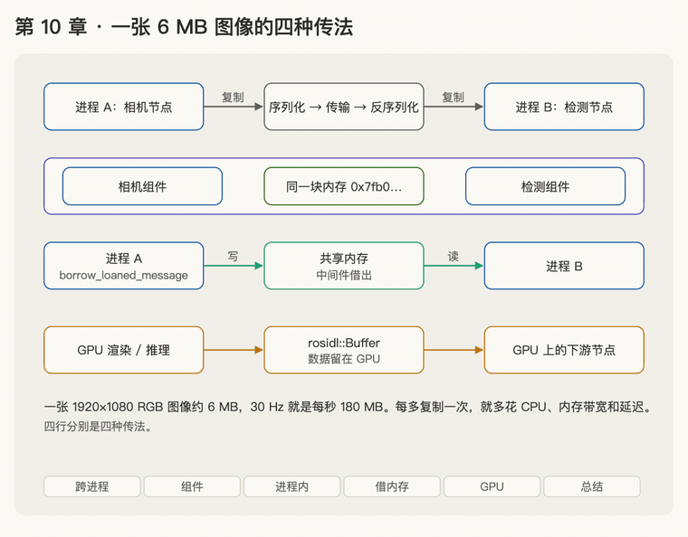

第 10 章 · 组合、进程内通信与零拷贝
本章回答：一张 1080p 图像从相机节点传到检测节点，要被复制几次？能不能一次都不复制？"组件"和普通节点有什么不同？Lyrical 新增的
rosidl::Buffer为什么对 GPU 推理很重要？
讲解日期：2026-11-13 · 上一章：第 9 章 Executor 与回调组 · 下一章：第 11 章 时间与托管节点
对应原文：ros2_documentation/source/ROS-Framework/nodes/About-Composition.rst；ros2_documentation/source/ROS-Framework/nodes/Working-with-nodes/intra-process/Intra-Process-Communication.rstL181–L185；ros2_documentation/source/ROS-Framework/interfaces/Working-with-interfaces/Buffer-Backends/About-Buffer-Backends.rst（路径相对ros2/materials/）
对应 study-plan 阶段 C5，动手里程碑 R-M4 后半（组件进程内 vs 跨进程传 1080p 图像测延迟）。
本章缩写：IPC = Inter-Process Communication（进程 / 间 / 通信），本章另有"intra-process"（进程 / 内）；SHM = Shared Memory（共享内存）；GPU = Graphics Processing Unit（图形 / 处理 / 单元）；unique_ptr（C++ 的独占智能指针：同一时刻只有一个主人）；POD = Plain Old Data（普通 / 老式 / 数据：没有指针、大小固定的简单结构）；dlopen（dynamic load open：运行时加载动态库）；RGB = Red, Green, Blue（红 / 绿 / 蓝：每像素 3 字节）。全部缩写见 附录 · 缩写与术语表
本章先看总图，再分 3 步：
| 步 | 内容 | 状态 |
|---|---|---|
| 0 | 总图：同一条图像消息的四种传法与复制次数 | ✅ |
| 1 | 组件（component）与组件容器 | ✅ |
| 2 | 进程内通信：unique_ptr 交接，零拷贝 |
✅ |
| 3 | 跨进程零拷贝（loaned messages）与 Lyrical 的 rosidl::Buffer |
✅ |
讲解
总图 · 一张图像的四种传法

可交互版：animations/10-zero-copy.html（内置浏览器：http://localhost:8340/10-zero-copy.html）。
一张 1920×1080 的 RGB 图像约 6 MB。30 Hz 就是每秒 180 MB。每多复制一次，就多花 CPU 时间和内存带宽，延迟也跟着增加。
| 传法 | 怎么做 | 复制 |
|---|---|---|
| 两个进程，普通发布订阅 | 序列化 → 网络栈 / 共享内存 → 反序列化 | 多次 |
| 同一进程的组件 + 进程内通信 | 直接交出 unique_ptr，订阅者拿到同一块内存 |
0 |
| 两个进程 + loaned messages | 中间件分配共享内存，两边直接读写同一块 | 0（需中间件和消息类型支持） |
GPU 上的数据 + rosidl::Buffer（Lyrical） |
消息字段直接指向 GPU 内存，不搬回 CPU | 0（需厂商后端） |
第 1 步 · 组件与组件容器
依据：ROS-Framework/nodes/About-Composition.rst（下称"组合文档"）、.../Working-with-nodes/Composition.rst（下称"组合教程"）。
组件（component）是"没有 main 函数的节点"：它被编译成动态库，运行时由一个组件容器进程加载进来（组合文档 Writing a Component）。ROS 1 里这叫 nodelet，和普通节点是两套 API；ROS 2 统一成一套，组件通常就是一个 rclcpp::Node 的子类。
好处是"部署时才决定进程怎么分"（组合文档 Unified API 一节）：
- 分开放：每个节点一个进程，一个崩了不影响别人，好调试；
- 合起来放：多个组件进一个进程，开销小，还能用进程内通信省掉复制。
类比：组件像可插拔的电器，容器是插线板。同一批电器，可以每个插一个插座（分进程），也可以插在同一个插线板上（同进程）。电器本身不用改。
写组件的规矩（C++，组合文档）：
- 不写
main；类继承rclcpp::Node，构造函数接收rclcpp::NodeOptions； - 构造函数里不要做耗时或阻塞的事（线程不归它管），周期性工作用定时器；
- 文件末尾用
rclcpp_components的宏注册，CMake 里rclcpp_components_register_nodes(talker_component "composition::Talker")。
组件目前是 C++ 特性；Python 节点只能各自一个进程。
命令行加载（组合教程）：
ros2 run rclcpp_components component_container # 启动一个空容器，节点名 /ComponentManager
ros2 component load /ComponentManager composition composition::Talker
ros2 component load /ComponentManager composition composition::Listener
ros2 component list # 看容器里装了谁
选容器的 executor（组合文档 Component Container）：component_container 默认单线程 executor；--executor-type multi-threaded 或 events-cbg 换成多线程 / 事件 executor（thread_num 参数设线程数）；加 --isolated 给每个组件一个独立的 executor。第 9 章的调度规则在容器里同样适用。
实际项目里用 launch 的 ComposableNodeContainer + ComposableNode 描述"哪些组件装进哪个容器"（第 14 章）。
第 2 步 · 进程内通信：交出指针，零拷贝
依据：.../Working-with-nodes/intra-process/Intra-Process-Communication.rst（下称"进程内文档"）、design/articles/intraprocess_communication.md。
同一进程里的两个节点，如果都开了进程内通信：
Node(name, rclcpp::NodeOptions().use_intra_process_comms(true))
发布时用 std::unique_ptr 交出消息：
auto msg = std::make_unique<std_msgs::msg::Int32>();
msg->data = 42;
pub_->publish(std::move(msg)); // 交出所有权，之后自己不能再用 msg
订阅者收到的是同一块内存。官方 demo 让发布者和订阅者都打印消息地址，两边地址相同，证明没有复制（进程内文档，"Published message with value: 0, and address: 0x7fb02303faf0" 与订阅者打印的地址一致）。
为什么要 unique_ptr？ 它表示"我把这块内存交给你了，我不再碰"。既然发布者保证不再改，就可以直接把指针给订阅者，不用担心两边同时改。如果有多个订阅者，ROS 会把指针给最后一个，前面的订阅者各得到一份复制（或者都用 const 共享指针只读）。
类比：交接文件。普通方式是复印一份寄过去；进程内通信是把原件直接递给隔壁同事，自己不再保留。
第 3 步 · 跨进程零拷贝与 rosidl::Buffer
loaned messages（借出的消息）（.../Configure-ZeroCopy-loaned-messages.rst、design/articles/zero_copy.md）：发布者不自己 new 一条消息，而是向中间件"借"一块内存（通常在共享内存里），填好后发布；订阅者直接从这块共享内存读。两个进程看的是同一块物理内存。
- 支持情况：Fast DDS 支持；Connext、Cyclone DDS 在官方表格里标为不支持。
- 中间件支持时，发布端默认就会用借出的消息。
- 限制：中间件得能把这个消息类型放进共享内存，一般要求消息大小固定（没有不限长的数组、字符串）。图像
sensor_msgs/Image的data是不限长数组，通常不满足，这就是下面rosidl::Buffer要解决的问题之一。
rosidl::Buffer（Lyrical 新增）（ROS-Framework/interfaces/Working-with-interfaces/Buffer-Backends/About-Buffer-Backends.rst）：
- C++ 生成代码里，所有
uint8[]这类变长数组字段的类型从std::vector<uint8_t>换成了rosidl::Buffer<uint8_t>。它用起来和vector一样，旧代码不用改。 - 区别是它可以挂"后端"：数据可以放在 CPU 内存，也可以放在 GPU 内存或厂商自己的内存里。
- 为什么需要它：进程内通信和 loaned messages 只能省 CPU 内存之间的复制。可如果图像是 GPU 渲染出来的、张量是加速器算出来的，以前得先拷回 CPU 塞进
vector才能发布，订阅者再拷回 GPU。rosidl::Buffer让消息字段直接指向 GPU 内存，整条链路数据都不离开 GPU（文档 "Why a new type is needed"）。 - 发布订阅两端需要用
rmw_fastrtps_cpp或rmw_zenoh_cpp，并安装对应的后端实现（Release-Lyrical-Luth.rst对应一节）。
和本仓库的连接：相机 → 预处理 → VLA 推理 → 动作，整条感知链如果都在 GPU 上（比如 NVIDIA Isaac ROS 的做法），rosidl::Buffer 能省掉 CPU↔GPU 的来回搬运，这是降低端到端延迟的关键一步。R-M4 先在 CPU 上量一量"进程内 vs 跨进程"的差距，建立直觉。
练习与作答记录
练习 10-1（第 1 步）：说出"每个节点一个进程"和"多个组件进一个容器"各自的一个好处。什么情况下你会选前者？
- 作答：（待作答）
练习 10-2（第 2 步）：发布者 publish(std::move(msg)) 之后又访问了 msg->data，会发生什么？为什么进程内零拷贝要求这样？
- 作答：（待作答）
练习 10-3（第 3 步）：sensor_msgs/Image 为什么通常用不了 loaned messages？rosidl::Buffer 解决的是 loaned messages 解决不了的哪类场景？
- 作答：（待作答）
口诀
- 组件：没有 main 的节点，编成动态库，进容器加载；进程怎么分，部署时再定。
- 进程内：开
use_intra_process_comms，unique_ptr一交，零拷贝。 - 跨进程：借中间件的共享内存（loaned messages），要定长类型、要中间件支持。
- GPU：Lyrical 的
rosidl::Buffer，变长数组能直接指向 GPU 内存。
本章复习卡片编号
R26–R27，见 ../review.md。
附录 · 延伸阅读
留给以后深入学习用，不影响本章主线。★ 是建议先读的。
materials/指ros2/materials/；不带前缀的路径在materials/ros2_documentation/source/下（design/、ecosystem/开头的在materials/下）；...表示省略了和上一条相同的目录。
推荐阅读
| 读什么 | 读哪里 | 读它为了什么 |
|---|---|---|
★ About-Composition.rst |
materials/ros2_documentation/source/ROS-Framework/nodes/About-Composition.rst |
组件、容器类型、注册宏。 |
Composition.rst |
.../Working-with-nodes/Composition.rst、Writing-a-Composable-Node.rst、Developer-Tools/Launch/Launching-composable-nodes.rst |
命令行和 launch 里加载组件。 |
★ Intra-Process-Communication.rst |
.../Working-with-nodes/intra-process/Intra-Process-Communication.rst |
进程内 demo（打印地址验证零拷贝）、图像管道 demo。 |
Configure-ZeroCopy-loaned-messages.rst |
.../Working-with-Client-Libraries/Configure-ZeroCopy-loaned-messages.rst |
loaned messages 支持表与 demo。 |
★ Buffer-Backends |
ROS-Framework/interfaces/Working-with-interfaces/Buffer-Backends/ |
About-Buffer-Backends.rst、GPU-Buffer-Transport.rst、Using-Buffer-Backends.rst、Writing-a-Buffer-Backend.rst。 |
intraprocess_communication.md |
materials/design/articles/intraprocess_communication.md、zero_copy.md |
设计细节（多订阅者时的所有权处理等）。 |
Nvidia-ROS2-Projects.rst |
Integrations-and-related/Related-Projects/Nvidia-ROS2-Projects.rst |
NVIDIA 的 GPU 加速 ROS 2 项目索引。 |
数学原理
- 带宽：每秒字节数 = 每条字节数 × 频率；1920 × 1080 × 3 × 30 ≈ 187 MB/s。
公式清单
| 公式 / 规则 |
|---|
| 图像字节数 = 宽 × 高 × 通道数 |
代码对照：把本章的数字用代码算一遍
纯 Python 模拟，不需要 ROS 2（原因见第 1 章这一节）。代码在仓库本地
ros2/solutions/chapter-code/ch10_zero_copy.py，配套测试tests/test_ch06_10.py；同名 notebook 在notebooks/ch10_zero_copy.ipynb（讲解和代码放在一起，一格一格跑）。Mac 上直接能跑：
bash cd ros2/solutions/chapter-code uv run python ch10_zero_copy.py # 一步一步打印 uv run pytest tests/test_ch06_10.py
讲义 ↔ 代码：
| 讲义 | 规则 / 数字 | 写法 | 跑出来 |
|---|---|---|---|
| 总图 图像大小 | 1920 × 1080 × 3 | image_bytes() |
6,220,800 字节 ≈ 6.2 MB |
| 总图 带宽 | × 30 Hz | size * 30 |
每秒约 187 MB（讲义按 6 MB 取整成 180 MB） |
| 第 2 步 复制 | 普通跨进程 = 复印一份 | bytes(img) is img |
False |
| 第 2 步 交出 | unique_ptr：递原件，自己不留 | Handoff().publish_move(...) |
同一个对象；发布者手里空了 |
| 第 2 步 多订阅者 | 最后一个拿原件，前面的复制 | deliver(img, 3) |
[False, False, True] |
关键几行：
size = 1920 * 1080 * 3 # RGB 每像素 3 字节
copy = bytes(img) # 复印：新对象
self.msg = holder.pop(key) # 交出：发布者那边删掉，订阅者拿到原件
[bytearray(msg) for _ in range(n - 1)] + [msg] # 多个可改的订阅者：最后一个拿原件
代码里才看得到的 3 件事：
id()/is相当于 C++ 里打印地址：官方 demo 用两边打印的地址相同来证明零拷贝，Python 里用is判断是不是同一个对象。- 6.2 MB 和 6 MB：讲义总图按约 6 MB 算出"每秒 180 MB"，精确值是 6.22 MB × 30 ≈ 187 MB。
holder.pop模仿std::move之后发布者不能再用原来的指针。发布者之后再访问会怎样，留给练习 10-2。
自己改一改（不影响练习答案）：
- 把分辨率改成 1280 × 720，算每秒要搬多少 MB；
- 把
deliver的订阅者数改成 1，看是不是一次复制都没有。